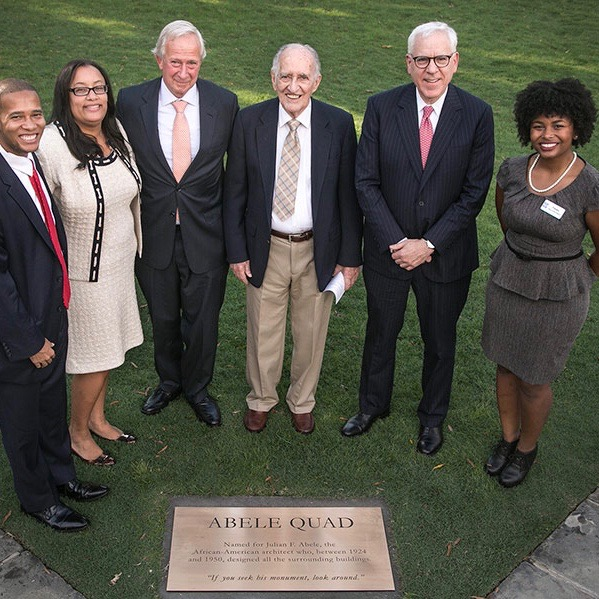
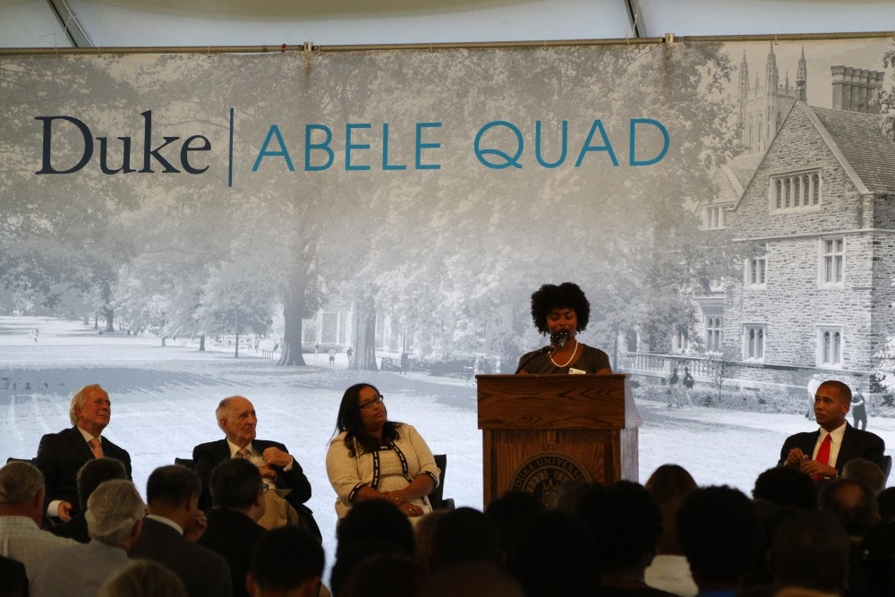

Public Speaking


Addressed crowd of over 500 at Duke University Abele Quad Dedication honoring the African American architect of Duke's campus, Julian Abele. Speakers also included Julian Abele's son, Julian Abele Jr., Duke University President Richard Broadhead, and Duke University Board of Trustees Chair David Rubenstein.
Abele Quad Dedication
September 30, 2016
Details
Lessons from Entrepreneurial Women
February 23, 2019
DetailsRead full event recap here.

Duke Basketball Countdown To Craziness
October 18, 2014
DetailsBe Dynamic by Tiana Horn
One day somebody asked me Who and what is NPHC? Is it just a parade of colors? How do they serve? How do they lead? Well to answer that question Just look to history We are the talented tenth from George Washington Carver to Dr. King We are A. Philip Randolph’s march And Dr. Kings speech We are Langston Hughes words And Wilt Chamberlain’s reach We are a legacy of service And a standard of excellence We are Zora Neale Hurston’s wisdom And we are Rosa Parks stance We are breaking down barriers Through unanimity of thought and action We wear our black and white Each in a different fashion We’re shades of black and blue We’re gold and we’re green We’re pure white and we’re purple We’re crimson and we’re cream We all bond together For greater service to the community We’re the definition of sisterhood and brotherhood We’re the epitome of unity So in case you were wondering Just who and what we are In case you couldn’t see past The yardshows, signs, and calls In case you were thinking We were just ordinary Greeks There is nothing ordinary about us We are the Dynamic Duke NPHC
Event Planning
Unapologetically Black feat. KCAMPAbele Quad Dedication
Abele Awards Ceremony
Zeta Galas
Videography & Video Editing
GlowStranger
North Cack
Gala
Bry
Famille
At Your Best
True Life
First Semester
Flower Child First Store
Photography & Photo Editing
Graduation (Elia, Ernie, Mine)Wedding
Maternity
Baby (Kaylen, Leilani, Jojo)
Holiday
Product
Greek Life (Probates, 25th anniversary)
Graphic Design
Business Graphics (Flower Child, Carpe, SoloPro)Greek Fliers (Week, Activism, chapel week, Meet the Zetas)
Student Organization Fliers (Abele Awards, Abele Series, Real Talk)
Modeling
Earnestly NaturalWonsii
Ebony
Flower Child
Cannone Jones
Jabulani African Cultural Showcase